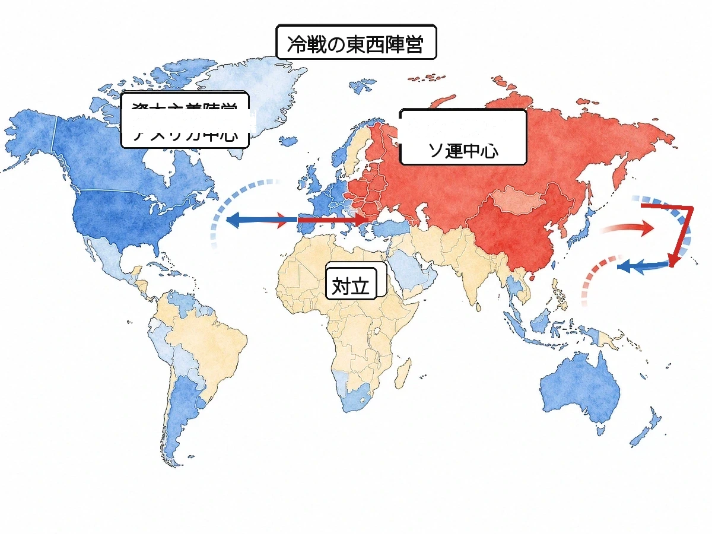
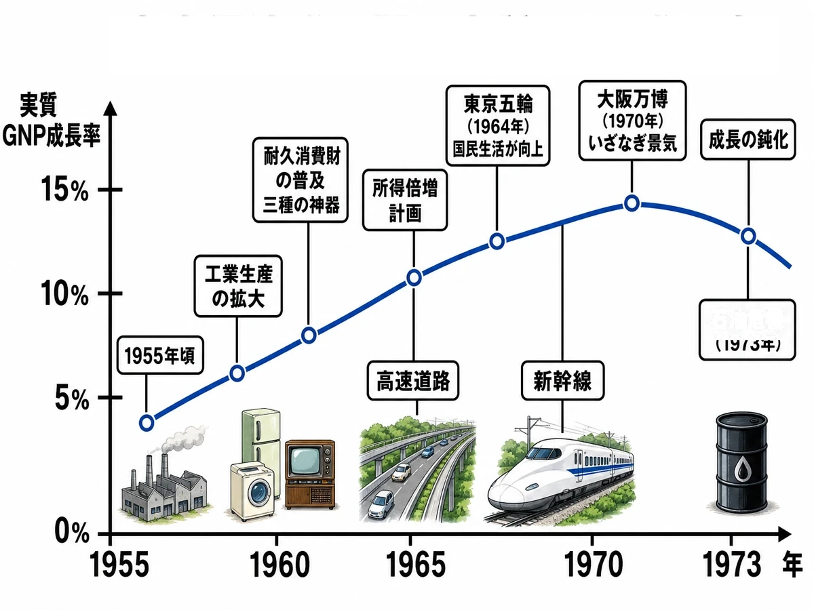

歴史 ⑱問題集Web版
冷戦と日本の復興
戦後の国際社会 〜 高度経済成長期
 いっしょに
いっしょにがんばろう！
💡タブか下のリストから単元を選ぼう！
やり方（おすすめ順・穴埋め・一問一答・4択・記述）は単元を開いてから選べるよ。
📖 参考書Web版を開く
やり方（おすすめ順・穴埋め・一問一答・4択・記述）は単元を開いてから選べるよ。
年
年表でチェック
（ ）をタップすると答えが出るよ。まずは自分で言ってから確かめよう！
| 年代 | できごと |
|---|---|
| 1945年 | 世界平和を目指すが発足する |
| 1949年 | 毛沢東がを建国する |
| 1950年 | 北朝鮮の侵攻でが始まる |
| 1951年 | 吉田茂内閣がに調印する |
| 1954年 | 保安隊が改組されが発足する |
| 1955年 | 保守合同で自由民主党が結成され、が始まる |
| 1956年 | が結ばれ、日本が国際連合に加盟する |
| 1960年 | 新日米安全保障条約に反対するが起こる |
| 1961年 | 東ドイツがを築く |
| 1962年 | 米ソが対立したが起こる |
| 1964年 | が開催され、東海道新幹線が開通する |
| 1965年 | が結ばれる |
| 1968年 | がノーベル文学賞を受賞する |
| 1970年 | 日本初の国際博覧会であるが開催される |
| 1972年 | 沖縄返還とが同じ年に実現する |
| 1973年 | が起こり高度経済成長が終わる |
1
冷戦の始まり
▶やり方をえらぼう目次にもどれば何度でも変えられるよ
解答
採点
順番
順番
A要点まとめ（ ）をタップして確かめよう
📖 先に参考書で理解する
第二次世界大戦後、アメリカを中心とする資本主義陣営とソ連を中心とする社会主義陣営が、直接戦火を交えずに対立するが始まった。1949年、西側諸国は軍事同盟であるを結成し、これに対抗して1955年にソ連と東欧諸国はを結んだ。1945年には世界平和を目指すが発足し、その中心機関であるには米英仏ソ中の5常任理事国が置かれた。1949年に毛沢東がを建国し、1950年には北朝鮮が韓国に攻め込んでが始まった。1961年には東ドイツが東西ベルリンを隔てるを築き、1962年には米ソが核戦争寸前まで対立したが起こった。1960年から75年まで続いたでは、アメリカが介入したが敗れて撤退した。
B一問一答1 / 14
戦後のアメリカとソ連の直接戦争にならない対立は？
📖 解説を読む（ヒント）
冷戦
米ソが直接戦わず軍備・経済・国の仕組み（資本主義と社会主義）で争った状態。1947年頃〜1989年。
B一問一答2 / 14
アメリカ中心の資本主義陣営とソ連中心の社会主義陣営の対立は？
📖 解説を読む（ヒント）
東西陣営
西側＝アメリカ中心で自由経済（資本主義）、東側＝ソ連中心で国が経済を管理（社会主義）の二大グループ。
B一問一答4 / 14
1955年に結成された東側諸国の軍事同盟は？
📖 解説を読む（ヒント）
ワルシャワ条約機構
1955年、NATOに対抗してソ連と東欧諸国が結成した東側陣営の軍事同盟。1991年に解消。
B一問一答5 / 14
1945年に発足した世界平和を目指す国際機関は？
📖 解説を読む（ヒント）
国際連合
1945年、国際連盟に代わり世界平和のため設立された国際機関。本部はニューヨークで原加盟国は51か国。
B一問一答7 / 14
国連の中で世界平和を維持する責任を持つ機関は？
📖 解説を読む（ヒント）
安全保障理事会
国連の中心機関。米英仏ロ中の5常任と非常任10か国で構成。常任は1か国でも反対すれば決議を止める拒否権を持つ。
B一問一答8 / 14
1961年に東ドイツが東西ベルリンを隔てるために築いた壁は？
📖 解説を読む（ヒント）
ベルリンの壁
1961年に東ドイツが築いた冷戦の象徴。東西ベルリンを隔てたが、1989年に市民の力で崩壊した。
B一問一答9 / 14
1950年に北朝鮮が韓国に攻め込んで始まった戦争は？
📖 解説を読む（ヒント）
朝鮮戦争
1950年北朝鮮の南進で開戦。冷戦下アジアの代理戦争となり、日本は特需景気で経済復興した。1953年休戦。
B一問一答11 / 14
1960〜75年にベトナムで起きた戦争は？
📖 解説を読む（ヒント）
ベトナム戦争
1960〜75年、社会主義の北ベトナムと米支援の南ベトナムが戦った。米軍は介入したが敗北し撤退した。
B一問一答14 / 14
1962年、米ソが核戦争寸前まで対立した事件は？
📖 解説を読む（ヒント）
キューバ危機
1962年、ソ連がキューバにミサイル基地を建設しようとし、米ケネディ大統領と対立。核戦争寸前まで緊張が高まった。
B一問一答全14問・まとめて採点
まず全部の問題にこたえてから、下のボタンでまとめて答え合わせしよう！
(1)戦後のアメリカとソ連の直接戦争にならない対立は？
冷戦
米ソが直接戦わず軍備・経済・国の仕組み（資本主義と社会主義）で争った状態。1947年頃〜1989年。
(2)アメリカ中心の資本主義陣営とソ連中心の社会主義陣営の対立は？
東西陣営
西側＝アメリカ中心で自由経済（資本主義）、東側＝ソ連中心で国が経済を管理（社会主義）の二大グループ。
(3)1949年に結成された西側諸国の軍事同盟は？
NATO
北大西洋条約機構の略称。1949年、アメリカと西欧諸国が結成した西側陣営の軍事同盟。
(4)1955年に結成された東側諸国の軍事同盟は？
ワルシャワ条約機構
1955年、NATOに対抗してソ連と東欧諸国が結成した東側陣営の軍事同盟。1991年に解消。
(5)1945年に発足した世界平和を目指す国際機関は？
国際連合
1945年、国際連盟に代わり世界平和のため設立された国際機関。本部はニューヨークで原加盟国は51か国。
(6)国際連合が発足した年は？
1945年
1945年は第二次世界大戦が終結した年で、同年10月に国際連合が原加盟国51か国で発足した。
(7)国連の中で世界平和を維持する責任を持つ機関は？
安全保障理事会
国連の中心機関。米英仏ロ中の5常任と非常任10か国で構成。常任は1か国でも反対すれば決議を止める拒否権を持つ。
(8)1961年に東ドイツが東西ベルリンを隔てるために築いた壁は？
ベルリンの壁
1961年に東ドイツが築いた冷戦の象徴。東西ベルリンを隔てたが、1989年に市民の力で崩壊した。
(9)1950年に北朝鮮が韓国に攻め込んで始まった戦争は？
朝鮮戦争
1950年北朝鮮の南進で開戦。冷戦下アジアの代理戦争となり、日本は特需景気で経済復興した。1953年休戦。
(10)朝鮮戦争が始まった年は？
1950年
1950年に北朝鮮が韓国に侵攻して開戦し、米中の介入を経て1953年に板門店で休戦協定が結ばれた。
(11)1960〜75年にベトナムで起きた戦争は？
ベトナム戦争
1960〜75年、社会主義の北ベトナムと米支援の南ベトナムが戦った。米軍は介入したが敗北し撤退した。
(12)1949年に毛沢東が建国した国は？
中華人民共和国
1949年、毛沢東率いる共産党が国共内戦に勝利して建国。蒋介石の国民党は台湾へ逃れた。
(13)中華人民共和国が成立した年は？
1949年
1949年は毛沢東が中華人民共和国を建国した年で、西側ではNATOが結成された冷戦の節目の年。
(14)1962年、米ソが核戦争寸前まで対立した事件は？
キューバ危機
1962年、ソ連がキューバにミサイル基地を建設しようとし、米ケネディ大統領と対立。核戦争寸前まで緊張が高まった。
E資料問題写真を見て答えよう

(1)地図中で、アメリカを中心とする西側の陣営を何というか。
(2)地図中で、ソ連を中心とする東側の陣営を何というか。

2
日本の独立回復
▶やり方をえらぼう目次にもどれば何度でも変えられるよ
解答
採点
順番
順番
A要点まとめ（ ）をタップして確かめよう
📖 先に参考書で理解する
1951年、内閣は連合国48か国との間にを結び、同じ日に米軍の駐留を認めるにも調印した。翌1952年に条約が発効すると、日本は独立を回復し、GHQによる占領が終わった。1950年に朝鮮戦争が始まると、GHQの指令でがつくられ、1952年の保安隊を経て1954年にへと発展した。また朝鮮戦争にともなう軍需物資の発注はと呼ばれる好景気を日本にもたらした。1960年、内閣は新日米安全保障条約を成立させたが、これに反対する大規模なが起こり、内閣は退陣した。1972年には内閣のもとでが実現し、27年に及んだ米軍統治が終わって沖縄は日本に復帰した。
B一問一答1 / 14
1951年、日本と連合国48か国が結んだ講和条約は？
📖 解説を読む（ヒント）
サンフランシスコ平和条約
1951年、吉田茂内閣が連合国48か国と調印した講和条約。翌1952年に発効し、日本は独立を回復した。
B一問一答2 / 14
サンフランシスコ平和条約が結ばれた年は？
📖 解説を読む（ヒント）
1951年
1951年は吉田茂内閣がサンフランシスコ平和条約と日米安全保障条約に同日調印した年。翌52年発効で日本独立。
B一問一答3 / 14
サンフランシスコ平和条約が発効し日本が独立を回復した年は？
📖 解説を読む（ヒント）
1952年
1952年はサンフランシスコ平和条約が発効し日本が独立を回復した年。GHQによる約7年間の占領が終わった。
B一問一答4 / 14
サンフランシスコ平和条約・日米安全保障条約に調印した首相は？
📖 解説を読む（ヒント）
吉田茂
戦後復興期の首相。1951年にサンフランシスコ平和条約と日米安全保障条約に調印し日本独立への道を開いた。
B一問一答5 / 14
1951年に日米間で結ばれた、米軍の日本駐留を認める条約は？
📖 解説を読む（ヒント）
日米安全保障条約
1951年にサンフランシスコ平和条約と同日に結ばれ、米軍の日本駐留を認めた条約。日米同盟の出発点となった。
B一問一答6 / 14
1950年、朝鮮戦争を背景に作られた組織は？
📖 解説を読む（ヒント）
警察予備隊
1950年、朝鮮戦争の勃発を背景にGHQ指令で作られた組織。1952年に保安隊、1954年に自衛隊へと発展した。
B一問一答7 / 14
1954年に発足した日本の防衛組織は？
📖 解説を読む（ヒント）
自衛隊
1954年発足の日本の防衛組織。1950年の警察予備隊が1952年保安隊、1954年に自衛隊へと変化した。
B一問一答9 / 14
朝鮮戦争による軍需物資の発注で日本が経済復興した好景気は？
📖 解説を読む（ヒント）
朝鮮特需
1950年に始まった朝鮮戦争で、米軍からの軍需物資の発注が日本に集中。日本経済の戦後復興を加速させた好景気。
B一問一答10 / 14
1960年に岸信介内閣が改定した日米安保条約は？
📖 解説を読む（ヒント）
新日米安全保障条約
1960年に岸信介内閣が改定。日本かアメリカが攻撃されたら互いに助け合うことを明確化。安保闘争が起きた。
B一問一答11 / 14
新日米安全保障条約が結ばれ、安保闘争が起きた年は？
📖 解説を読む（ヒント）
1960年
1960年は岸信介内閣が新日米安全保障条約を成立させ、改定反対の安保闘争が起きて内閣が退陣した年。
B一問一答12 / 14
1960年の新安保条約改定に反対した大規模な国民運動は？
📖 解説を読む（ヒント）
安保闘争
1960年の新安保条約改定に反対し、学生や労働組合、市民が連日国会前を取り巻いた戦後最大規模のデモ運動。
B一問一答13 / 14
1972年、アメリカから日本に返還された地域は？
📖 解説を読む（ヒント）
沖縄返還
1972年、佐藤栄作内閣の時に実現。1945年の沖縄戦以来27年間続いた米軍統治が終わり、本土復帰した。
B一問一答全14問・まとめて採点
まず全部の問題にこたえてから、下のボタンでまとめて答え合わせしよう！
(1)1951年、日本と連合国48か国が結んだ講和条約は？
サンフランシスコ平和条約
1951年、吉田茂内閣が連合国48か国と調印した講和条約。翌1952年に発効し、日本は独立を回復した。
(2)サンフランシスコ平和条約が結ばれた年は？
1951年
1951年は吉田茂内閣がサンフランシスコ平和条約と日米安全保障条約に同日調印した年。翌52年発効で日本独立。
(3)サンフランシスコ平和条約が発効し日本が独立を回復した年は？
1952年
1952年はサンフランシスコ平和条約が発効し日本が独立を回復した年。GHQによる約7年間の占領が終わった。
(4)サンフランシスコ平和条約・日米安全保障条約に調印した首相は？
吉田茂
戦後復興期の首相。1951年にサンフランシスコ平和条約と日米安全保障条約に調印し日本独立への道を開いた。
(5)1951年に日米間で結ばれた、米軍の日本駐留を認める条約は？
日米安全保障条約
1951年にサンフランシスコ平和条約と同日に結ばれ、米軍の日本駐留を認めた条約。日米同盟の出発点となった。
(6)1950年、朝鮮戦争を背景に作られた組織は？
警察予備隊
1950年、朝鮮戦争の勃発を背景にGHQ指令で作られた組織。1952年に保安隊、1954年に自衛隊へと発展した。
(7)1954年に発足した日本の防衛組織は？
自衛隊
1954年発足の日本の防衛組織。1950年の警察予備隊が1952年保安隊、1954年に自衛隊へと変化した。
(8)自衛隊が発足した年は？
1954年
1954年は保安隊が改組されて自衛隊（陸海空）が発足し、これを統括する防衛庁が設置された年。
(9)朝鮮戦争による軍需物資の発注で日本が経済復興した好景気は？
朝鮮特需
1950年に始まった朝鮮戦争で、米軍からの軍需物資の発注が日本に集中。日本経済の戦後復興を加速させた好景気。
(10)1960年に岸信介内閣が改定した日米安保条約は？
新日米安全保障条約
1960年に岸信介内閣が改定。日本かアメリカが攻撃されたら互いに助け合うことを明確化。安保闘争が起きた。
(11)新日米安全保障条約が結ばれ、安保闘争が起きた年は？
1960年
1960年は岸信介内閣が新日米安全保障条約を成立させ、改定反対の安保闘争が起きて内閣が退陣した年。
(12)1960年の新安保条約改定に反対した大規模な国民運動は？
安保闘争
1960年の新安保条約改定に反対し、学生や労働組合、市民が連日国会前を取り巻いた戦後最大規模のデモ運動。
(13)1972年、アメリカから日本に返還された地域は？
沖縄返還
1972年、佐藤栄作内閣の時に実現。1945年の沖縄戦以来27年間続いた米軍統治が終わり、本土復帰した。
(14)沖縄が日本に復帰した年は？
1972年
1972年は佐藤栄作内閣の時に沖縄返還が実現した年。27年に及ぶ米軍統治が終わり日本に復帰した。
3
国際社会への復帰
▶やり方をえらぼう目次にもどれば何度でも変えられるよ
解答
採点
順番
順番
A要点まとめ（ ）をタップして確かめよう
📖 先に参考書で理解する
1955年、自由党と日本民主党が合同して自由民主党が結成され、以後長期政権を担うが始まった。1956年、内閣はソ連との戦争状態を終わらせるを結び、これを機に日本は同年への加盟を果たして国際社会に復帰した。1965年には内閣が韓国と国交を樹立するを結び、1967年には佐藤首相が核兵器を「持たず、作らず、持ち込ませず」とするを表明した。1972年、内閣は中華人民共和国と国交を樹立するを発表し、台湾の中華民国とは断交した。1978年には福田赳夫内閣がこれを条約として確定させるを結んだ。
B一問一答1 / 14
1956年に鳩山一郎内閣が結んだ、ソ連との戦争状態を終わらせた宣言は？
📖 解説を読む（ヒント）
日ソ共同宣言
1956年に鳩山一郎内閣が結んだ宣言。ソ連との戦争状態を終わらせ国交を回復し、同年の日本の国連加盟への道を開いた。
B一問一答2 / 14
日ソ共同宣言と国連加盟の年は？
📖 解説を読む（ヒント）
1956年
1956年は鳩山一郎内閣が日ソ共同宣言を結び、ソ連の支持を得て国連加盟を実現。日本の国際社会復帰の転換点となった。
B一問一答3 / 14
1956年に日本が加盟し、国際社会への復帰を果たした国際組織は？
📖 解説を読む（ヒント）
国際連合（国連）
日本は1956年に国際連合（国連）へ加盟し、国際社会へ復帰した。同年の日ソ共同宣言で国交回復したことが加盟実現を後押しした。
B一問一答4 / 14
日ソ共同宣言を結び国連加盟を実現した首相は？
📖 解説を読む（ヒント）
鳩山一郎
1956年に日ソ共同宣言を結び国連加盟を実現した首相。1955年の保守合同で自由民主党を結成し55年体制を始動させた。
B一問一答5 / 14
1955年から続いた自民党と社会党の二大政党体制は？
📖 解説を読む（ヒント）
55年体制
1955〜93年まで続いた政治のしくみ。自民党が長く政権を担い、日本社会党が主な野党として向き合った体制。
B一問一答6 / 14
1955年に結成された保守政党は？
📖 解説を読む（ヒント）
自由民主党（自民党）
1955年に自由党と日本民主党の保守合同で結成された保守政党。55年体制で長期政権を担い、1993年まで続いた。
B一問一答7 / 14
1965年に佐藤栄作内閣が結んだ、韓国との国交を樹立した条約は？
📖 解説を読む（ヒント）
日韓基本条約
1965年、佐藤栄作内閣が結び韓国と国交を樹立。韓国を朝鮮半島の正式な政府と認め、経済協力を約束した条約。
B一問一答8 / 14
日韓基本条約が結ばれた年は？
📖 解説を読む（ヒント）
1965年
1965年は佐藤栄作内閣のもとで日韓基本条約が結ばれ、日本と韓国の国交が樹立された年。経済協力も約束された。
B一問一答9 / 14
1972年に田中角栄内閣が出した、中華人民共和国と国交を結んだ声明は？
📖 解説を読む（ヒント）
日中共同声明
1972年、田中角栄首相が訪中し中華人民共和国と国交を樹立した声明。これにより日本は中華民国（台湾）と断交した。
B一問一答10 / 14
日中共同声明と沖縄返還の年は？
📖 解説を読む（ヒント）
1972年
1972年は沖縄返還が実現し、首相が佐藤栄作から田中角栄に代わり、田中内閣が日中共同声明を出した節目の年。
B一問一答11 / 14
日中国交正常化を実現した首相は？
📖 解説を読む（ヒント）
田中角栄
1972年の日中共同声明で日中国交正常化を実現した首相。「日本列島改造論」を掲げ経済成長を完成させようとした。
B一問一答12 / 14
1978年に福田赳夫内閣が結んだ、日中の平和を約束する条約は？
📖 解説を読む（ヒント）
日中平和友好条約
1978年に福田赳夫内閣が結んだ条約で、日中の平和友好を約束した。1972年の日中共同声明から6年後の正式条約化。
B一問一答13 / 14
「持たず、作らず、持ち込ませず」の核兵器に関する日本の方針は？
📖 解説を読む（ヒント）
非核三原則
「核兵器を持たず、作らず、持ち込ませず」とする日本の核政策の三原則。1967年に佐藤栄作首相が表明した。
B一問一答14 / 14
非核三原則を表明し、ノーベル平和賞を受賞した首相は？
📖 解説を読む（ヒント）
佐藤栄作
1972年に沖縄返還を実現し非核三原則を表明した首相。1974年にノーベル平和賞を受賞。首相在任期間は当時最長だった。
B一問一答全14問・まとめて採点
まず全部の問題にこたえてから、下のボタンでまとめて答え合わせしよう！
(1)1956年に鳩山一郎内閣が結んだ、ソ連との戦争状態を終わらせた宣言は？
日ソ共同宣言
1956年に鳩山一郎内閣が結んだ宣言。ソ連との戦争状態を終わらせ国交を回復し、同年の日本の国連加盟への道を開いた。
(2)日ソ共同宣言と国連加盟の年は？
1956年
1956年は鳩山一郎内閣が日ソ共同宣言を結び、ソ連の支持を得て国連加盟を実現。日本の国際社会復帰の転換点となった。
(3)1956年に日本が加盟し、国際社会への復帰を果たした国際組織は？
国際連合（国連）
日本は1956年に国際連合（国連）へ加盟し、国際社会へ復帰した。同年の日ソ共同宣言で国交回復したことが加盟実現を後押しした。
(4)日ソ共同宣言を結び国連加盟を実現した首相は？
鳩山一郎
1956年に日ソ共同宣言を結び国連加盟を実現した首相。1955年の保守合同で自由民主党を結成し55年体制を始動させた。
(5)1955年から続いた自民党と社会党の二大政党体制は？
55年体制
1955〜93年まで続いた政治のしくみ。自民党が長く政権を担い、日本社会党が主な野党として向き合った体制。
(6)1955年に結成された保守政党は？
自由民主党（自民党）
1955年に自由党と日本民主党の保守合同で結成された保守政党。55年体制で長期政権を担い、1993年まで続いた。
(7)1965年に佐藤栄作内閣が結んだ、韓国との国交を樹立した条約は？
日韓基本条約
1965年、佐藤栄作内閣が結び韓国と国交を樹立。韓国を朝鮮半島の正式な政府と認め、経済協力を約束した条約。
(8)日韓基本条約が結ばれた年は？
1965年
1965年は佐藤栄作内閣のもとで日韓基本条約が結ばれ、日本と韓国の国交が樹立された年。経済協力も約束された。
(9)1972年に田中角栄内閣が出した、中華人民共和国と国交を結んだ声明は？
日中共同声明
1972年、田中角栄首相が訪中し中華人民共和国と国交を樹立した声明。これにより日本は中華民国（台湾）と断交した。
(10)日中共同声明と沖縄返還の年は？
1972年
1972年は沖縄返還が実現し、首相が佐藤栄作から田中角栄に代わり、田中内閣が日中共同声明を出した節目の年。
(11)日中国交正常化を実現した首相は？
田中角栄
1972年の日中共同声明で日中国交正常化を実現した首相。「日本列島改造論」を掲げ経済成長を完成させようとした。
(12)1978年に福田赳夫内閣が結んだ、日中の平和を約束する条約は？
日中平和友好条約
1978年に福田赳夫内閣が結んだ条約で、日中の平和友好を約束した。1972年の日中共同声明から6年後の正式条約化。
(13)「持たず、作らず、持ち込ませず」の核兵器に関する日本の方針は？
非核三原則
「核兵器を持たず、作らず、持ち込ませず」とする日本の核政策の三原則。1967年に佐藤栄作首相が表明した。
(14)非核三原則を表明し、ノーベル平和賞を受賞した首相は？
佐藤栄作
1972年に沖縄返還を実現し非核三原則を表明した首相。1974年にノーベル平和賞を受賞。首相在任期間は当時最長だった。
4
高度経済成長
▶やり方をえらぼう目次にもどれば何度でも変えられるよ
解答
採点
順番
順番
A要点まとめ（ ）をタップして確かめよう
📖 先に参考書で理解する
1955年から1973年にかけて、日本経済は年平均約10%という急成長を遂げ、これをと呼ぶ。1950年代後半には電気冷蔵庫・洗濯機・白黒テレビからなる「」が家庭に普及し、1960年代にはカー・カラーテレビ・クーラーの「3C」が広まった。1964年にはが開催され、これに合わせてが開通し、1970年には日本初の国際博覧会であるが開かれた。一方で経済成長の負の側面として環境汚染による健康被害も深刻化し、水俣病・新潟水俣病・イタイイタイ病・を合わせてと呼ぶ。1967年にはが制定され、公害防止の取り組みが始まった。1973年、第四次中東戦争をきっかけとするが起こると、高度経済成長は終わりを迎えた。
B一問一答1 / 14
1955〜73年に日本経済が年平均約10%成長した時期は？
📖 解説を読む（ヒント）
高度経済成長
1955〜73年に年平均約10%成長した時期で、「東洋の奇跡」と呼ばれた。日本は世界第2位の経済大国となった。
B一問一答3 / 14
1950年代後半に普及した電気冷蔵庫・洗濯機・白黒テレビは？
📖 解説を読む（ヒント）
三種の神器
1950年代後半に普及した電気冷蔵庫・洗濯機・白黒テレビの3つ。家庭生活が大きく近代化した。
B一問一答4 / 14
1960年代に普及したカー・カラーテレビ・クーラーは？
📖 解説を読む（ヒント）
3C
1960年代に普及したカー（自動車）・カラーテレビ・クーラーで、新三種の神器とも呼ばれた。
B一問一答5 / 14
1964年に開催されたアジア初のオリンピックは？
📖 解説を読む（ヒント）
東京オリンピック
1964年に開催されたアジア初のオリンピック。高度経済成長の象徴で、同年に東海道新幹線も開通した。
B一問一答7 / 14
1964年に開業した東京〜新大阪間の高速鉄道は？
📖 解説を読む（ヒント）
東海道新幹線
1964年、東京〜新大阪間で開業した世界初の高速鉄道。東京オリンピックに合わせて開通し、高度経済成長を象徴した。
B一問一答8 / 14
1970年に開催された日本初の国際博覧会は？
📖 解説を読む（ヒント）
大阪万博
1970年に大阪で開かれた日本初の国際博覧会。「人類の進歩と調和」がテーマで、岡本太郎の「太陽の塔」が有名。
B一問一答10 / 14
経済成長の負の側面として生じた、環境汚染による健康被害は？
📖 解説を読む（ヒント）
公害
高度経済成長期の負の側面で、水俣病・新潟水俣病・イタイイタイ病・四日市ぜんそくの四大公害病が代表例。
B一問一答11 / 14
水俣病・新潟水俣病・イタイイタイ病・四日市ぜんそくの総称は？
📖 解説を読む（ヒント）
四大公害病
水俣病（熊本）・新潟水俣病・イタイイタイ病（富山）・四日市ぜんそく（三重）の総称で、高度経済成長期の負の遺産。
B一問一答12 / 14
熊本県で発生した、有機水銀による神経の病気は？
📖 解説を読む（ヒント）
水俣病
チッソの工場排水の有機水銀が海に流れ、それを食べた魚介を食べた人々に出た神経の病気。1956年公式確認。
B一問一答13 / 14
1973年に第四次中東戦争で石油価格が高騰した出来事は？
📖 解説を読む（ヒント）
石油危機（オイルショック）
1973年の第四次中東戦争で原油価格が高騰した出来事。高度経済成長は終わり、日本は安定成長期に入った。
B一問一答全14問・まとめて採点
まず全部の問題にこたえてから、下のボタンでまとめて答え合わせしよう！
(1)1955〜73年に日本経済が年平均約10%成長した時期は？
高度経済成長
1955〜73年に年平均約10%成長した時期で、「東洋の奇跡」と呼ばれた。日本は世界第2位の経済大国となった。
(2)高度経済成長の時期は？
1955〜73年
高度経済成長は1955年頃から続き、1973年の第四次中東戦争による石油危機（オイルショック）で終わった。
(3)1950年代後半に普及した電気冷蔵庫・洗濯機・白黒テレビは？
三種の神器
1950年代後半に普及した電気冷蔵庫・洗濯機・白黒テレビの3つ。家庭生活が大きく近代化した。
(4)1960年代に普及したカー・カラーテレビ・クーラーは？
3C
1960年代に普及したカー（自動車）・カラーテレビ・クーラーで、新三種の神器とも呼ばれた。
(5)1964年に開催されたアジア初のオリンピックは？
東京オリンピック
1964年に開催されたアジア初のオリンピック。高度経済成長の象徴で、同年に東海道新幹線も開通した。
(6)東京オリンピック・東海道新幹線開業の年は？
1964年
1964年は東京オリンピックと東海道新幹線開業の年。戦後復興を遂げた日本の姿を世界に示した。
(7)1964年に開業した東京〜新大阪間の高速鉄道は？
東海道新幹線
1964年、東京〜新大阪間で開業した世界初の高速鉄道。東京オリンピックに合わせて開通し、高度経済成長を象徴した。
(8)1970年に開催された日本初の国際博覧会は？
大阪万博
1970年に大阪で開かれた日本初の国際博覧会。「人類の進歩と調和」がテーマで、岡本太郎の「太陽の塔」が有名。
(9)大阪万博が開催された年は？
1970年
1970年は大阪万博が開かれ、日本が高度経済成長の絶頂期にあったことを象徴する年となった。
(10)経済成長の負の側面として生じた、環境汚染による健康被害は？
公害
高度経済成長期の負の側面で、水俣病・新潟水俣病・イタイイタイ病・四日市ぜんそくの四大公害病が代表例。
(11)水俣病・新潟水俣病・イタイイタイ病・四日市ぜんそくの総称は？
四大公害病
水俣病（熊本）・新潟水俣病・イタイイタイ病（富山）・四日市ぜんそく（三重）の総称で、高度経済成長期の負の遺産。
(12)熊本県で発生した、有機水銀による神経の病気は？
水俣病
チッソの工場排水の有機水銀が海に流れ、それを食べた魚介を食べた人々に出た神経の病気。1956年公式確認。
(13)1973年に第四次中東戦争で石油価格が高騰した出来事は？
石油危機（オイルショック）
1973年の第四次中東戦争で原油価格が高騰した出来事。高度経済成長は終わり、日本は安定成長期に入った。
(14)石油危機が起きた年は？
1973年
1973年は第四次中東戦争による石油危機（オイルショック）が起こり、高度経済成長の終わりとなった年。
E資料問題写真を見て答えよう

(1)グラフのように、1950年代半ばから1973年ごろまで年平均10%前後の高い成長が続いた時期を何というか。
(2)グラフから読み取れる、この時期の日本の経済成長率はおよそ何%で推移していたか。次のア〜ウから選びなさい。 ア 約1% イ 約10% ウ 約30%
(3)グラフで成長率が大きく落ち込んだ1973年に起こり、この成長が終わるきっかけとなったできごとを何というか。
(4)グラフを参考に、1973年を境に日本経済がどのように変化したかを、「成長率」の語を使って説明しなさい。
5
戦後の文化
▶やり方をえらぼう目次にもどれば何度でも変えられるよ
解答
採点
順番
順番
A要点まとめ（ ）をタップして確かめよう
📖 先に参考書で理解する
1953年、NHKと民間放送でが始まり、新聞やラジオと並ぶとして戦後の大衆文化に大きな影響を与えた。1949年にはが中間子理論により日本人として初めてノーベル物理学賞を受賞し、1968年には「雪国」などの作品でが日本人初のノーベル文学賞を受賞した。映画の分野では、「羅生門」「七人の侍」で世界的に知られるが活躍し、マンガでは「鉄腕アトム」を著した「マンガの神様」が、戦後の日本の文化の基礎を築いた。文学では「金閣寺」を著したや、「竜馬がゆく」などの歴史小説で人気を集めたが活躍した。1974年には元首相のが沖縄返還と非核三原則の表明を理由にノーベル平和賞を受賞した。
B一問一答1 / 12
1953年に日本で本放送が始まったメディアは？
📖 解説を読む（ヒント）
テレビ放送
1953年、NHKと民放（日本テレビ）が同年に本放送を開始。戦後の大衆文化を象徴するメディアとなった。
B一問一答2 / 12
日本でテレビ放送が始まった年は？
📖 解説を読む（ヒント）
1953年
1953年はNHKと民放（日本テレビ）でテレビ本放送が始まった年。戦後の大衆文化を象徴するメディアが誕生した。
B一問一答3 / 12
新聞・テレビ・ラジオなど大量に情報を伝える媒体は？
📖 解説を読む（ヒント）
マスメディア
新聞・テレビ・ラジオなど大量に情報を伝える媒体。1953年のテレビ放送開始以降、戦後の生活と世論に大きな影響を与えた。
B一問一答4 / 12
1949年に日本人初のノーベル賞（物理学賞）を受賞した科学者は？
📖 解説を読む（ヒント）
湯川秀樹
1949年に物理学賞を受賞した日本人初のノーベル賞学者。原子核の中の粒子を説明する中間子理論で評価された。
B一問一答5 / 12
湯川秀樹がノーベル賞を受賞した年は？
📖 解説を読む（ヒント）
1949年
1949年は湯川秀樹が中間子理論で日本人初のノーベル賞（物理学賞）を受賞し、敗戦間もない日本に希望を与えた年。
B一問一答6 / 12
1968年にノーベル文学賞を受賞した日本人初の作家は？
📖 解説を読む（ヒント）
川端康成
1968年に日本人初のノーベル文学賞を受賞した作家。「雪国」「伊豆の踊子」「古都」などの作品で世界に知られる。
B一問一答7 / 12
「羅生門」「七人の侍」などで世界的に有名な映画監督は？
📖 解説を読む（ヒント）
黒澤明
「羅生門」「七人の侍」などで世界的に有名な映画監督。1951年に「羅生門」がヴェネチア国際映画祭で金獅子賞を受賞した。
B一問一答8 / 12
「鉄腕アトム」「火の鳥」などを著した「マンガの神様」は？
📖 解説を読む（ヒント）
手塚治虫
「鉄腕アトム」「火の鳥」「ブラック・ジャック」などを著した「マンガの神様」。戦後の日本マンガ・アニメ文化の基礎を作った。
B一問一答9 / 12
手塚治虫らが発展させた日本独自の動画文化は？
📖 解説を読む（ヒント）
アニメ
1963年放送開始の手塚治虫「鉄腕アトム」を皮切りに発展した日本独自の動画文化。現在は世界中に愛好者がいる。
B一問一答10 / 12
「金閣寺」「潮騒」などを著した戦後の作家は？
📖 解説を読む（ヒント）
三島由紀夫
「金閣寺」「潮騒」などを著した戦後の作家。1970年に自衛隊市ヶ谷駐屯地で自殺し社会に衝撃を与えた。
B一問一答11 / 12
「竜馬がゆく」「坂の上の雲」などを著した歴史小説家は？
📖 解説を読む（ヒント）
司馬遼太郎
「竜馬がゆく」「坂の上の雲」など幕末・明治期を題材にした歴史小説で戦後の国民的人気を集めた作家。
B一問一答12 / 12
1974年にノーベル平和賞を受賞した日本人元首相は？
📖 解説を読む（ヒント）
佐藤栄作
1974年に日本人初のノーベル平和賞を受賞した元首相。沖縄返還の実現と非核三原則の表明が評価された。
B一問一答全12問・まとめて採点
まず全部の問題にこたえてから、下のボタンでまとめて答え合わせしよう！
(1)1953年に日本で本放送が始まったメディアは？
テレビ放送
1953年、NHKと民放（日本テレビ）が同年に本放送を開始。戦後の大衆文化を象徴するメディアとなった。
(2)日本でテレビ放送が始まった年は？
1953年
1953年はNHKと民放（日本テレビ）でテレビ本放送が始まった年。戦後の大衆文化を象徴するメディアが誕生した。
(3)新聞・テレビ・ラジオなど大量に情報を伝える媒体は？
マスメディア
新聞・テレビ・ラジオなど大量に情報を伝える媒体。1953年のテレビ放送開始以降、戦後の生活と世論に大きな影響を与えた。
(4)1949年に日本人初のノーベル賞（物理学賞）を受賞した科学者は？
湯川秀樹
1949年に物理学賞を受賞した日本人初のノーベル賞学者。原子核の中の粒子を説明する中間子理論で評価された。
(5)湯川秀樹がノーベル賞を受賞した年は？
1949年
1949年は湯川秀樹が中間子理論で日本人初のノーベル賞（物理学賞）を受賞し、敗戦間もない日本に希望を与えた年。
(6)1968年にノーベル文学賞を受賞した日本人初の作家は？
川端康成
1968年に日本人初のノーベル文学賞を受賞した作家。「雪国」「伊豆の踊子」「古都」などの作品で世界に知られる。
(7)「羅生門」「七人の侍」などで世界的に有名な映画監督は？
黒澤明
「羅生門」「七人の侍」などで世界的に有名な映画監督。1951年に「羅生門」がヴェネチア国際映画祭で金獅子賞を受賞した。
(8)「鉄腕アトム」「火の鳥」などを著した「マンガの神様」は？
手塚治虫
「鉄腕アトム」「火の鳥」「ブラック・ジャック」などを著した「マンガの神様」。戦後の日本マンガ・アニメ文化の基礎を作った。
(9)手塚治虫らが発展させた日本独自の動画文化は？
アニメ
1963年放送開始の手塚治虫「鉄腕アトム」を皮切りに発展した日本独自の動画文化。現在は世界中に愛好者がいる。
(10)「金閣寺」「潮騒」などを著した戦後の作家は？
三島由紀夫
「金閣寺」「潮騒」などを著した戦後の作家。1970年に自衛隊市ヶ谷駐屯地で自殺し社会に衝撃を与えた。
(11)「竜馬がゆく」「坂の上の雲」などを著した歴史小説家は？
司馬遼太郎
「竜馬がゆく」「坂の上の雲」など幕末・明治期を題材にした歴史小説で戦後の国民的人気を集めた作家。
(12)1974年にノーベル平和賞を受賞した日本人元首相は？
佐藤栄作
1974年に日本人初のノーベル平和賞を受賞した元首相。沖縄返還の実現と非核三原則の表明が評価された。
D記述問題2 / 2 文章で説明しよう
日本人として初めてノーベル物理学賞を受賞した科学者はだれか、戦後復興期の人々に与えた影響にふれて説明しなさい。
指定語句 湯川秀樹ノーベル物理学賞
📖 解説を読む（ヒント）
解答
年表でチェック
国際連合 中華人民共和国 朝鮮戦争 サンフランシスコ平和条約 自衛隊 55年体制 日ソ共同宣言 安保闘争 ベルリンの壁 キューバ危機 東京オリンピック 日韓基本条約 川端康成 大阪万博 日中共同声明 石油危機
1 冷戦の始まり
A 要点まとめ① 冷戦 ② NATO ③ ワルシャワ条約機構 ④ 国際連合 ⑤ 安全保障理事会 ⑥ 中華人民共和国 ⑦ 朝鮮戦争 ⑧ ベルリンの壁 ⑨ キューバ危機 ⑩ ベトナム戦争
B 一問一答(1) 冷戦 (2) 東西陣営 (3) NATO (4) ワルシャワ条約機構 (5) 国際連合 (6) 1945年 (7) 安全保障理事会 (8) ベルリンの壁 (9) 朝鮮戦争 (10) 1950年 (11) ベトナム戦争 (12) 中華人民共和国 (13) 1949年 (14) キューバ危機
C 実戦問題(1) ウ（冷戦） (2) ウ（国際連合） (3) イ（安全保障理事会） (4) ウ（ソ連） (5) イ（キューバ危機） (6) エ（アメリカ） (7) ア（ドイツ） (8) エ（1953年）
D 記述問題
(1) アメリカを中心とする資本主義陣営とソ連を中心とする社会主義陣営が、直接戦火を交えず軍備や経済の面で対立したこと。
(2) 朝鮮戦争にともなう軍需物資の発注が日本に集中し、朝鮮特需と呼ばれる好景気をもたらして経済復興を後押しした。
(3) 西側諸国は軍事同盟のNATO（北大西洋条約機構）を結成し、これに対抗して東側のソ連と東欧諸国はワルシャワ条約機構を結んだ。
E 資料問題(1) 資本主義陣営（西側陣営） (2) 社会主義陣営（東側陣営）
2 日本の独立回復
A 要点まとめ① 吉田茂 ② サンフランシスコ平和条約 ③ 日米安全保障条約 ④ 警察予備隊 ⑤ 自衛隊 ⑥ 朝鮮特需 ⑦ 岸信介 ⑧ 安保闘争 ⑨ 佐藤栄作 ⑩ 沖縄返還
B 一問一答(1) サンフランシスコ平和条約 (2) 1951年 (3) 1952年 (4) 吉田茂 (5) 日米安全保障条約 (6) 警察予備隊 (7) 自衛隊 (8) 1954年 (9) 朝鮮特需 (10) 新日米安全保障条約 (11) 1960年 (12) 安保闘争 (13) 沖縄返還 (14) 1972年
C 実戦問題(1) ウ（サンフランシスコ平和条約） (2) ア（吉田茂） (3) ウ（岸信介） (4) ウ（朝鮮特需） (5) エ（警察予備隊） (6) エ（1952年） (7) イ（佐藤栄作） (8) ア（ソ連）
D 記述問題
(1) サンフランシスコ平和条約と同時に結び、米軍が日本に駐留することを認めて日本の安全を守ることを目的とした。
(2) 岸信介内閣が新日米安全保障条約を成立させたことに対し、学生や労働組合、市民が改定に強く反対したから。
(3) 朝鮮戦争が始まるとGHQの指令で警察予備隊がつくられ、1952年の保安隊を経て1954年に自衛隊へと発展した。
3 国際社会への復帰
A 要点まとめ① 55年体制 ② 鳩山一郎 ③ 日ソ共同宣言 ④ 国際連合 ⑤ 佐藤栄作 ⑥ 日韓基本条約 ⑦ 非核三原則 ⑧ 田中角栄 ⑨ 日中共同声明 ⑩ 日中平和友好条約
B 一問一答(1) 日ソ共同宣言 (2) 1956年 (3) 国際連合（国連） (4) 鳩山一郎 (5) 55年体制 (6) 自由民主党（自民党） (7) 日韓基本条約 (8) 1965年 (9) 日中共同声明 (10) 1972年 (11) 田中角栄 (12) 日中平和友好条約 (13) 非核三原則 (14) 佐藤栄作
C 実戦問題(1) イ（1956年） (2) ウ（「持たず、作らず、持ち込ませず」） (3) ウ（佐藤栄作） (4) エ（中華民国） (5) ウ（日中平和友好条約） (6) ア（佐藤栄作） (7) イ（自由民主党） (8) エ（沖縄返還）
D 記述問題
(1) 日ソ共同宣言によってソ連との戦争状態を終わらせて国交を回復したことが、同じ年に実現した国連加盟への道を開いたから。
(2) 日中共同声明で中華人民共和国と国交を樹立したことにより、それまで国交があった中華民国（台湾）とは断交した。
4 高度経済成長
A 要点まとめ① 高度経済成長 ② 三種の神器 ③ 東京オリンピック ④ 東海道新幹線 ⑤ 大阪万博 ⑥ 四日市ぜんそく ⑦ 四大公害病 ⑧ 公害対策基本法 ⑨ 石油危機
B 一問一答(1) 高度経済成長 (2) 1955〜73年 (3) 三種の神器 (4) 3C (5) 東京オリンピック (6) 1964年 (7) 東海道新幹線 (8) 大阪万博 (9) 1970年 (10) 公害 (11) 四大公害病 (12) 水俣病 (13) 石油危機（オイルショック） (14) 1973年
C 実戦問題(1) ア（東京オリンピック） (2) ウ（クーラー） (3) イ（カラーテレビ） (4) イ（有機水銀） (5) ア（カドミウム） (6) イ（1967年） (7) ウ（亜硫酸ガス） (8) エ（年平均10%）
D 記述問題
(1) 第四次中東戦争をきっかけに原油価格が高騰する石油危機が起こり、日本の高度経済成長は終わりを迎えた。
(2) チッソの工場排水に含まれる有機水銀が海に流れ込み、それを含む魚介類を食べた人々に神経の病気が発生した。
(3) 電気冷蔵庫・洗濯機・白黒テレビからなる「三種の神器」などの電化製品が普及し、家庭の生活が便利で豊かになった。
E 資料問題(1) 高度経済成長 (2) イ（約10%） (3) 石油危機（オイルショック） (4) 10%前後だった成長率が大きく落ちこみ、高度経済成長が終わった。（例）
5 戦後の文化
A 要点まとめ① テレビ放送 ② マスメディア ③ 湯川秀樹 ④ 川端康成 ⑤ 黒澤明 ⑥ 手塚治虫 ⑦ アニメ ⑧ 三島由紀夫 ⑨ 司馬遼太郎 ⑩ 佐藤栄作
B 一問一答(1) テレビ放送 (2) 1953年 (3) マスメディア (4) 湯川秀樹 (5) 1949年 (6) 川端康成 (7) 黒澤明 (8) 手塚治虫 (9) アニメ (10) 三島由紀夫 (11) 司馬遼太郎 (12) 佐藤栄作
C 実戦問題(1) ア（湯川秀樹） (2) イ（1953年） (3) ア（物理学） (4) イ（三島由紀夫） (5) ア（佐藤栄作） (6) ウ（1949年） (7) エ（1968年） (8) イ（司馬遼太郎）
D 記述問題
(1) 1953年に始まったテレビ放送は、新聞やラジオと並ぶマスメディアとして人々の生活や世論に大きな影響を与えた。
(2) 1949年に中間子理論で日本人として初めてノーベル物理学賞を受賞した湯川秀樹で、敗戦で自信を失っていた人々に希望と誇りを与え、戦後復興を勇気づけた。